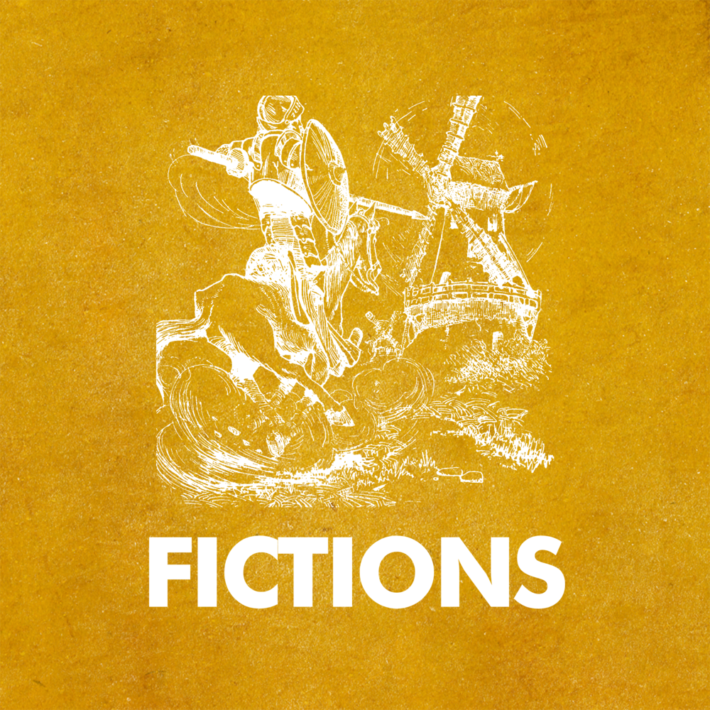

Overview
Purpose
[I will built a site for writers to post their stories and for readers to read them.]
Audience
[The writers who want to post their stories and the readers who want to read new stuffs.]
Branding
Website Logo

Style Guide
Color Palette
Palette URL: https://coolors.co/396e94-e7c24f-a43312-381d2a-aabd8c| Primary | Secondary | Accent 1 | Accent 2 |
|---|---|---|---|
| [#396E94] | [#E7C24F] | [#A43312] |
Typography
Heading Font: [Lobster]
Paragraph Font: [Roboto]
Normal paragraph example
Novel, fiction, romance!
Colored paragraph example
Wecome everyone who has a dream to become a writer to post your amazing stories here!
Navigation
Site Map
Content
Home page
People can see the website name and a banner at the top of this page. As they scroll down, they will find a grid with 8 tips and tricks in the form of cards, detailing how to fix minor issues with their PCs and speed up their computers. Some of the questions they might have include:
My website will provide quick and easy way to post and read for those who are loving stories and I will make them are clear and easy to read.
Images for the Home page

Stories
Images for the Page 2

About us
Welcome to Being Writer, the online home for writers of all genres and levels of experience. Whether you're a seasoned novelist or a beginner poet, we're here to support and inspire you on your writing journey. At Being Writer, we believe that writing is more than just putting words on a page - it's a way of life. We're passionate about helping writers find their voice, develop their craft, and connect with a community of fellow writers who share their love of words. Our website offers a wide range of resources, from writing prompts and exercises to craft articles and interviews with published authors. We also offer workshops and courses to help writers of all levels improve their skills and take their writing to the next level. But Being Writer is more than just a website - it's a community. We believe that writing is a collaborative process, and we're dedicated to creating a space where writers can share their work, give and receive feedback, and connect with others who share their passion for writing. So whether you're looking to start a new project, improve your skills, or simply connect with other writers, we invite you to join the Being Writer community. Let's create something beautiful together.
Images for the Page 3


Wireframes
Create three wireframes for your site. One for each page and list them here
Home
[Any additional details about home that the wireframe does not make clear]
[Page 2]
[Any additional details about page 2 that the wireframe does not make clear]
[Page 3]
[Any additional details about page 3 that the wireframe does not make clear]